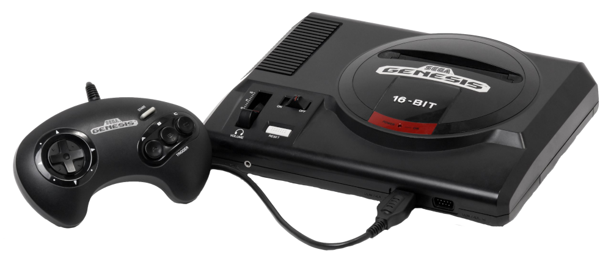

SegaGenesis
R$600
Mega Drive, conhecido como Sega Genesis na América do Norte, é um console de videogame de 16 bits desenvolvido e
comercializado pela Sega sendo um sucessor do Master System. O console foi lançado em 1988 no Japão como Mega
Drive e em 1989 na América do Norte como Genesis. No ano de 1990, foi distribuído na Europa pela Virgin Mastertronic,
na Nova Zelândia e Austrália pela Ozisoft e pela Tec Toy no Brasil. Na Coreia do Sul, foi distribuído pela Samsung com o
nome Super Gam*Boy e posteriormente como Super Aladdin Boy. Na Rússia, foi distribuído pela Forrus.